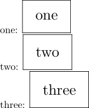

Contents
Summary
The command
\typesetbuffer
typesets a buffer verbatim
Settings
Description
With
\typesetbuffer[mybuffer]
, ConTeXt typesets the buffer
mybuffer
(previously defined by command
\startbuffer
) as an independent file and it includes it in the document as an external image.
To use the contents of the buffer as normal typeset material use the command \getbuffer.
To have the contents of the buffer typeset verbatim use the command \typebuffer.
When you invoke \typesetbuffer on a buffer that is already typeset, the buffer won’t be typeset again, but the requested page(s) will be included in the document as external figures.
Examples
Example 1
-
\startTEXpage \startbuffer [sample] \starttext \startTEXpage[offset=10pt] one \stopTEXpage \startTEXpage[offset=10pt] two \stopTEXpage \startTEXpage[offset=10pt] three \stopTEXpage \stoptext \stopbuffer one: \typesetbuffer[sample][frame=on,page=1] two: \externalfigure[\lasttypesetbuffer][frame=on,page=2] three: \typesetbuffer[*][frame=on,page=3] \stopTEXpage
- 
Notes
See also
- \defineexternalfigure
- \setupexternalfigure
- grph-fig.mkiv
-
\typebuffer
show the content in a
typingenvironment - Text blocks/Environments/Typing
- \startbuffer
- \getbuffer use the buffer with current (local) settings
- \typesetbufferonly only execute (TeX) the buffer, don’t place the result